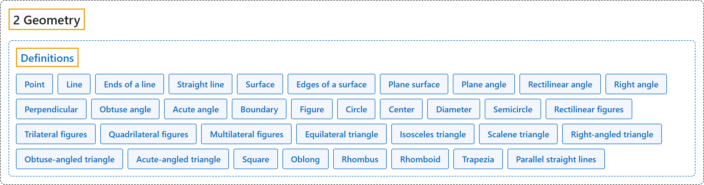

2 Geometry
Classification

Glossary
| Term | Definition | 中文翻译 | Source |
|---|---|---|---|
| Definitions 定义 |
(No definition) | （无定义） | Euclid, ca. 300 B.C.E./1996, Book I, "Definitions" |
| 2 Geometry 几何 |
(No definition) | （无定义） | Euclid, ca. 300 B.C.E./1996, Book I, "Definitions" |
| Point 点 |
"A point is that which has no part." | 点是没有部分的东西。 | Euclid, ca. 300 B.C.E./1996, Book I, Definition 1 |
| Line 线 |
"A line is breadthless length." | 线是没有宽度的长度。 | Euclid, ca. 300 B.C.E./1996, Book I, Definition 2 |
| Ends of a line 线的端点 |
"The ends of a line are points." | 线的两端是点。 | Euclid, ca. 300 B.C.E./1996, Book I, Definition 3 |
| Straight line 直线 |
"A straight line is a line which lies evenly with the points on itself." | 直线是与其上的点平齐地放置的线。 | Euclid, ca. 300 B.C.E./1996, Book I, Definition 4 |
| Surface 面 |
"A surface is that which has length and breadth only." | 面是只有长度和宽度的东西。 | Euclid, ca. 300 B.C.E./1996, Book I, Definition 5 |
| Edges of a surface 面的边 |
"The edges of a surface are lines." | 面的边是线。 | Euclid, ca. 300 B.C.E./1996, Book I, Definition 6 |
| Plane surface 平面 |
"A plane surface is a surface which lies evenly with the straight lines on itself." | 平面是与其上的直线平齐地放置的面。 | Euclid, ca. 300 B.C.E./1996, Book I, Definition 7 |
| Plane angle 平面角 |
"A plane angle is the inclination to one another of two lines in a plane which meet one another and do not lie in a straight line." | 平面角是平面上相交而不在一条直线上的两条线彼此的倾斜度。 | Euclid, ca. 300 B.C.E./1996, Book I, Definition 8 |
| Rectilinear angle 直线角 |
"And when the lines containing the angle are straight, the angle is called rectilinear." | 当夹成角的线是直线时，这个角称为直线角。 | Euclid, ca. 300 B.C.E./1996, Book I, Definition 9 |
| Right angle 直角 |
"When a straight line standing on a straight line makes the adjacent angles equal to one another, each of the equal angles is right" | 一条直线立在另一条直线上，使相邻两角彼此相等时，相等的每个角都是直角 | Euclid, ca. 300 B.C.E./1996, Book I, Definition 10 |
| Perpendicular 垂线 |
"the straight line standing on the other is called a perpendicular to that on which it stands." | 立在另一条直线上的那条直线称为它所立直线的垂线。 | Euclid, ca. 300 B.C.E./1996, Book I, Definition 10 |
| Obtuse angle 钝角 |
"An obtuse angle is an angle greater than a right angle." | 钝角是大于直角的角。 | Euclid, ca. 300 B.C.E./1996, Book I, Definition 11 |
| Acute angle 锐角 |
"An acute angle is an angle less than a right angle." | 锐角是小于直角的角。 | Euclid, ca. 300 B.C.E./1996, Book I, Definition 12 |
| Boundary 边界 |
"A boundary is that which is an extremity of anything." | 边界是任何东西的端部。 | Euclid, ca. 300 B.C.E./1996, Book I, Definition 13 |
| Figure 图形 |
"A figure is that which is contained by any boundary or boundaries." | 图形是由一条或几条边界围成的东西。 | Euclid, ca. 300 B.C.E./1996, Book I, Definition 14 |
| Circle 圆 |
"A circle is a plane figure contained by one line such that all the straight lines falling upon it from one point among those lying within the figure equal one another." | 圆是由一条线围成的平面图形，从图形内某一点到这条线的所有直线都彼此相等。 | Euclid, ca. 300 B.C.E./1996, Book I, Definition 15 |
| Center 圆心 |
"And the point is called the center of the circle." | 这个点称为圆的圆心。 | Euclid, ca. 300 B.C.E./1996, Book I, Definition 16 |
| Diameter 直径 |
"A diameter of the circle is any straight line drawn through the center and terminated in both directions by the circumference of the circle, and such a straight line also bisects the circle." | 圆的直径是经过圆心、两端都终止于圆周的任何直线，这样的直线也把圆平分。 | Euclid, ca. 300 B.C.E./1996, Book I, Definition 17 |
| Semicircle 半圆 |
"A semicircle is the figure contained by the diameter and the circumference cut off by it." | 半圆是由直径和被它截下的圆周围成的图形。 | Euclid, ca. 300 B.C.E./1996, Book I, Definition 18 |
| Rectilinear figures 直线形 |
"Rectilinear figures are those which are contained by straight lines" | 直线形是由直线围成的图形 | Euclid, ca. 300 B.C.E./1996, Book I, Definition 19 |
| Trilateral figures 三边形 |
"trilateral figures being those contained by three" | 三边形是由三条直线围成的图形 | Euclid, ca. 300 B.C.E./1996, Book I, Definition 19 |
| Quadrilateral figures 四边形 |
"quadrilateral those contained by four" | 四边形是由四条直线围成的图形 | Euclid, ca. 300 B.C.E./1996, Book I, Definition 19 |
| Multilateral figures 多边形 |
"multilateral those contained by more than four straight lines." | 多边形是由四条以上直线围成的图形。 | Euclid, ca. 300 B.C.E./1996, Book I, Definition 19 |
| Equilateral triangle 等边三角形 |
"Of trilateral figures, an equilateral triangle is that which has its three sides equal" | 三边形中，等边三角形是三条边都相等的三角形 | Euclid, ca. 300 B.C.E./1996, Book I, Definition 20 |
| Isosceles triangle 等腰三角形 |
"an isosceles triangle that which has two of its sides alone equal" | 等腰三角形是只有两条边相等的三角形 | Euclid, ca. 300 B.C.E./1996, Book I, Definition 20 |
| Scalene triangle 不等边三角形 |
"a scalene triangle that which has its three sides unequal." | 不等边三角形是三条边都不相等的三角形。 | Euclid, ca. 300 B.C.E./1996, Book I, Definition 20 |
| Right-angled triangle 直角三角形 |
"Further, of trilateral figures, a right-angled triangle is that which has a right angle" | 此外，三边形中，直角三角形是有一个直角的三角形 | Euclid, ca. 300 B.C.E./1996, Book I, Definition 21 |
| Obtuse-angled triangle 钝角三角形 |
"an obtuse-angled triangle that which has an obtuse angle" | 钝角三角形是有一个钝角的三角形 | Euclid, ca. 300 B.C.E./1996, Book I, Definition 21 |
| Acute-angled triangle 锐角三角形 |
"an acute-angled triangle that which has its three angles acute." | 锐角三角形是三个角都是锐角的三角形。 | Euclid, ca. 300 B.C.E./1996, Book I, Definition 21 |
| Square 正方形 |
"Of quadrilateral figures, a square is that which is both equilateral and right-angled" | 四边形中，正方形是四边相等且四角都是直角的四边形 | Euclid, ca. 300 B.C.E./1996, Book I, Definition 22 |
| Oblong 长方形 |
"an oblong that which is right-angled but not equilateral" | 长方形是四角都是直角但四边不都相等的四边形 | Euclid, ca. 300 B.C.E./1996, Book I, Definition 22 |
| Rhombus 菱形 |
"a rhombus that which is equilateral but not right-angled" | 菱形是四边相等但角不是直角的四边形 | Euclid, ca. 300 B.C.E./1996, Book I, Definition 22 |
| Rhomboid 长斜方形 |
"a rhomboid that which has its opposite sides and angles equal to one another but is neither equilateral nor right-angled." | 长斜方形是对边、对角分别相等，但四边不都相等、角也不是直角的四边形。 | Euclid, ca. 300 B.C.E./1996, Book I, Definition 22 |
| Trapezia 不规则四边形 |
"And let quadrilaterals other than these be called trapezia." | 其余的四边形称为不规则四边形。 | Euclid, ca. 300 B.C.E./1996, Book I, Definition 22 |
| Parallel straight lines 平行线 |
"Parallel straight lines are straight lines which, being in the same plane and being produced indefinitely in both directions, do not meet one another in either direction." | 平行直线是在同一平面内、向两个方向无限延长后在两个方向都不相交的直线。 | Euclid, ca. 300 B.C.E./1996, Book I, Definition 23 |
References
Euclid. (1996). Euclid's Elements (D. E. Joyce, Ed.; T. L. Heath, Trans.). Clark University. (Original work published ca. 300 B.C.E.) Retrieved October 29, 2026, from https://mathcs.clarku.edu/~djoyce/elements/bookI/bookI.html
Hilbert, D. (1902). The foundations of geometry (E. J. Townsend, Trans.). Open Court. Project Gutenberg. https://www.gutenberg.org/ebooks/17384
Megill, N. (2026). Metamath Proof Explorer home page (last updated January 19, 2026). Metamath. Retrieved October 29, 2026, from https://us.metamath.org/mpeuni/mmset.html